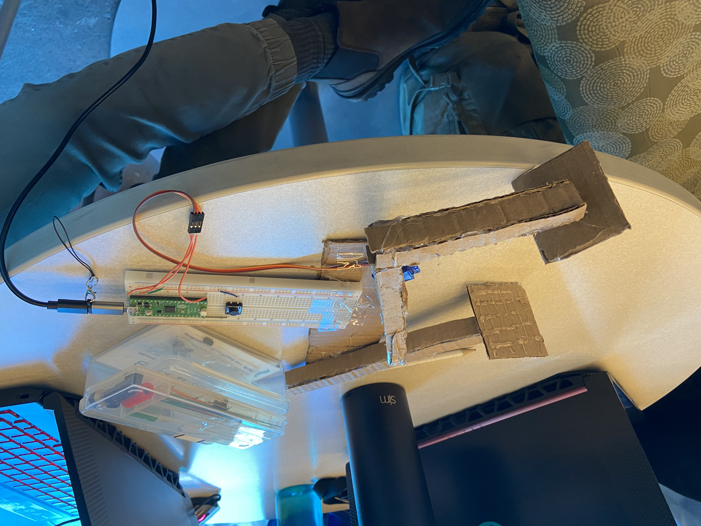
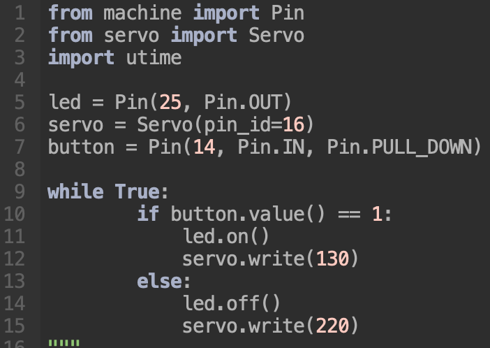

Programming Final Project Proposal
Plan:
For this project, I will incorporate servo motor control and button input using the Adafruit Circuit Playground. The project will be showcased on a website that uses client-side scripting. Structured programming will be applied by breaking the code into reusable functions, handling events, and using logical conditionals for smooth functionality.
Purpose:
The project aims to create a Robotic Arm controlled by a button, with the ability to perform basic tasks such as lifting objects.
- Problem Addressed: Helping people with mobility impairments grip things.
- Criteria:
- Must use a button to control the servo motor.
- Should be easy to use and demonstrate functionality clearly.
- Constraints:
- Limited resources and tools available in the classroom.
- Must be completed within the provided timeline.
Deliverables:
- Prototype: A robotic arm equipped with a servo motor controlled by a button. The arm will perform specific movements in response to button inputs.
- Final Design: Will include a lightweight frame, servo motor setup, and button interface.
-

-

-

Defining Resources:
- Materials Needed:
- Servo motor (e.g., SG90 or MG995).
- Button or push switch.
- Circuit Playground Express.
- Battery pack and wiring components.
- Tools Available:
- 3D printer for arm components (if required).
- Basic hand tools for assembly.
- Extra Materials: None required at the moment.
Explaining Terminology, Tools, and Processes:
- Key Terminology:
- Servo Motor: A motor with precise position control.
- Push Button: A simple switch mechanism for controlling electrical circuits.
- Tools and Processes:
- Programming in MicroPython for Raspberry Pi Pico control.
- Circuit design and wiring.
- Prototyping with 3D printing or manual assembly.
- Website development using HTML, CSS, and JavaScript.
Timelines:
- Mon Dec 16: I planned everything out.
- Tues Dec 17: I wrote a general psuedocode for my project.
- Mon Jan 6th: I wrote the code, wired the circuit, and built the physical prototype.
- Tues Jan 7th: I finished up the website and made sure my device properly worked
Health and Safety:
- For Your Safety: Handle electronic equipment (Circuit Playground, 3D printers, laptops, etc.) with care. Ensure proper insulation of wires to prevent electrical hazards.
- For Classmates' Safety: Maintain a clean workspace to avoid accidents. Inform classmates before using shared tools like a hot glue gun or scissors.
- For Equipment's Safety: Use tools within recommended guidelines. Avoid overheating components or miswiring circuits.
Indicators for Success:
- Success Criteria:
- Robotic arm responds to button presses and performs accurate movements.
- All features work consistently under real-world conditions.
- The website demonstrates the project effectively, with visuals and explanations.
- Early Completion Plan: If finished early, I will enhance the project by adding multiple buttons for additional movement control or implementing a potentiometer for variable movement control.